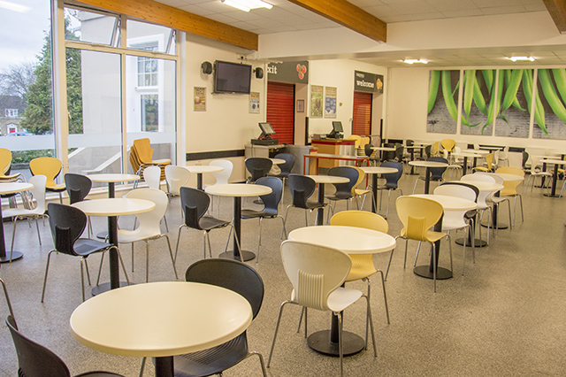
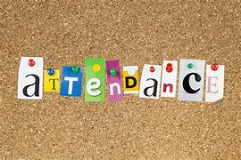

Campus Life

School Church
Was Established in 1978
Ever since it's opening in 1978, this School Church has been helping the Daily Worship Every Day. Constructed with 3 sturdy floors, with the church bell reaching the fourth floor, it has Sense of Modern Society. No Wonder it has Lasted this Long.
School Library
Was Built in 1980
The School Library is a Place where you can Open up, Take a Break, And read a Nice Book. With the attractively Colored walls, and not to mention the Lounging Furniture, if you have a break, STOP BY. Hope to see you Soon.

School Auditorium
Was Built in 1982
Pictured above is the School Auditorium. When you walk in, you'd see Dozens of Pitch-Black Chairs, Along with a Modernized, Wood, rough-squared wall, and small teeny-tiny white lights, able to host any activity. In the Years before multiple plays, fesivals, and concerts have been held in this very same room. If you Happen to have Time, Come Down and See our Wonderful Campers Perform a Show of a Lifetime. Have Fun.
School Achievements
Won first prize in inter school debate on environment pollution.
At our inter-school debate competition, we won first prize. But, it was for a reason. We are home to many full-attended, bright, hard-working young students, that make things like this happen. We offer various debate camps & classes throughout our school campus time. If you are interested, spots are open, and we'd be happy to take you in. Keep in mind other students might want to do this too, so when the sign-up sheet fly out, get to them FAST.
Won second in inter-school football competition.
In our inter-school football competition, we won second place, thanks to a hardworking group of students, that made this achievement happen. As you can see, many of our students participate in sports ,and among those sports, football (Or soccer in places such as the US ) seems to be one of the most popular. Multiple schools offer opportunties like this, so of course there is going to be some hard players and or teams. Second is still better than third. If you are interested, please try out. A bigger team is a better team.
Won second in inter-school science competition.
When our inter-school science competition rolled around, we got a stunning second place. Groups of students were chosen to present their certain project. The students were given weeks of preperation, studying, and time. This accomplishment hopefully will be able to be carried on to the next generation of students. The " Science Fair " definetly seems to be a popular choice among this group of people. Sign-ups are out or coming out if you are interested. If other students like it, there is a chance you will too. Have fun. Make something useful.
New
-
New School Canteen
Pictured beside is our new, and improved School Canteen. Every boarding school is required to have a lunch canteen, so we have decided to make ours the best of the best. Seated with dozens of chairs and tables, our canteen is a place where you can lounge the day off with friends. How the Canteen works ,is the following steps. First, you go into the order room, and pick the utensils / dishes you may wish to use. Each and every day, there will be a new lunch special featured, with choices of fruit, veggies, and grain. Next, you pick out your main choice and sides from the menu bar. Lastly, you find a table to sit at, and enjoy your lunch! The goal of our School Canteen, is for everyone to feast apon a good meal,and have energy to take their next classes. Hopefully, we see you soon.
Implemented Online Attendance System

1. Accuracy-
Humans are prone to error, even if we provide them with supporting computual devices. Automated attendance managemnet systems ensure accurate time records and minimalize the inevitible and costly errors with natural data entry.This accurate data thuroughly helps to provide accurate performance and payroll data.
2.Economics-
Have you ever thought that attendance management systems could control costs? It saves money by putting and end to inaccurate time reporting, buddy punching, absentism, tardiness, time abuse, and overpayment. As a matter of fact, a study done by the Axsium group found that large organizations save up to $3,600 per employee after implemating automated attendance management systems.
3. Productivity / Efficiency-
Monitoring and managing attendance usually is a time-consuming, laborious, and an expensive affair. It takes time to process paper sheets and time cards, create schedules, authorize leave and overtime, and create payroll manually. Free up precious administration time with an automated system that does it all for you, from keeping track of employee hours, to automatically importing information into your payroll system. The time and effort saved combined with data accuracy helps in optimizing the use of resources, which leads to increased productivity, and improves profits. And many more, like visibility / insights. Hassle free workflow management, flexibility, Integration / Configuration, meal-time tracking, security, and compliance.